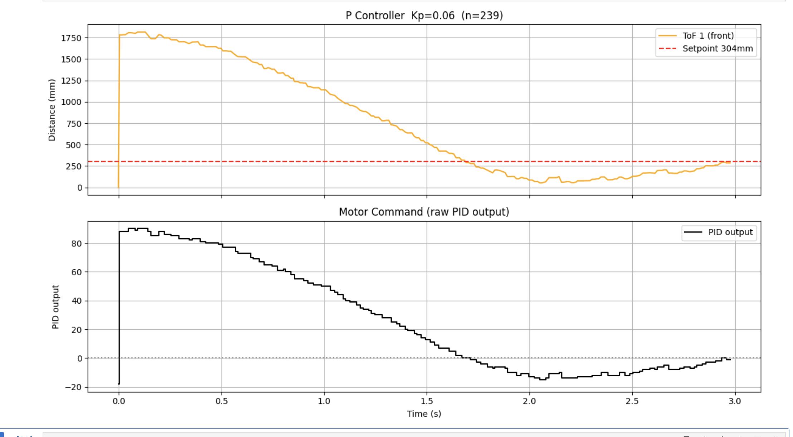
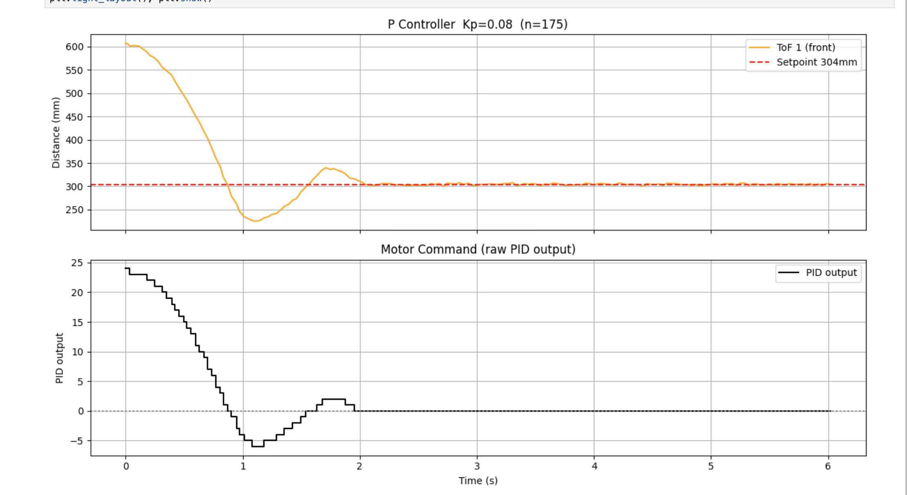
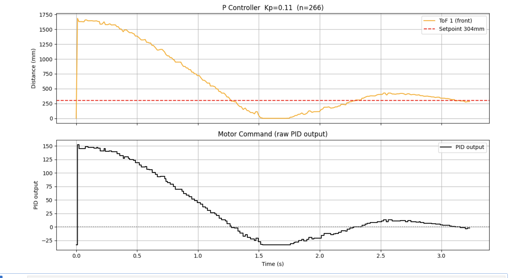
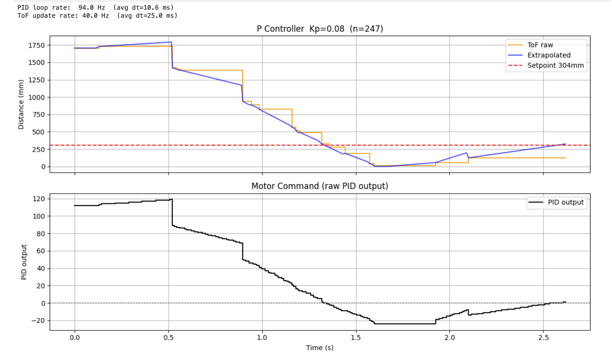
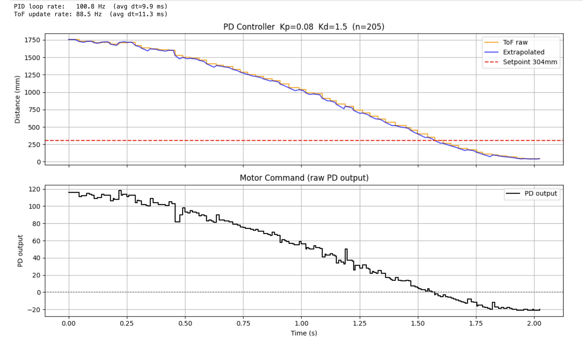
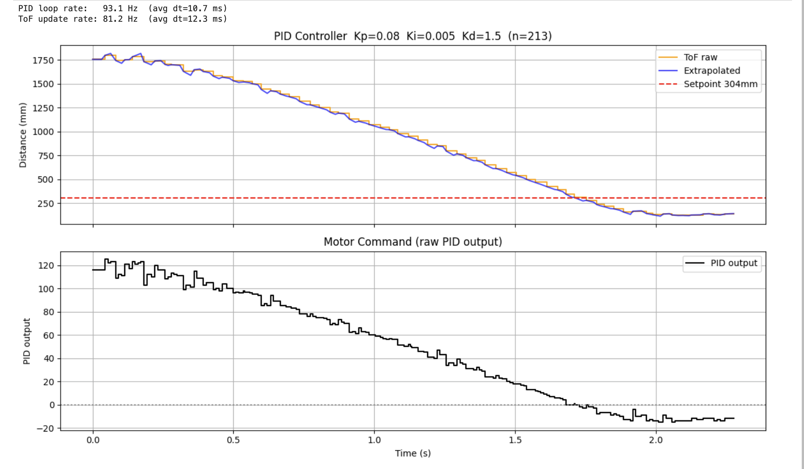
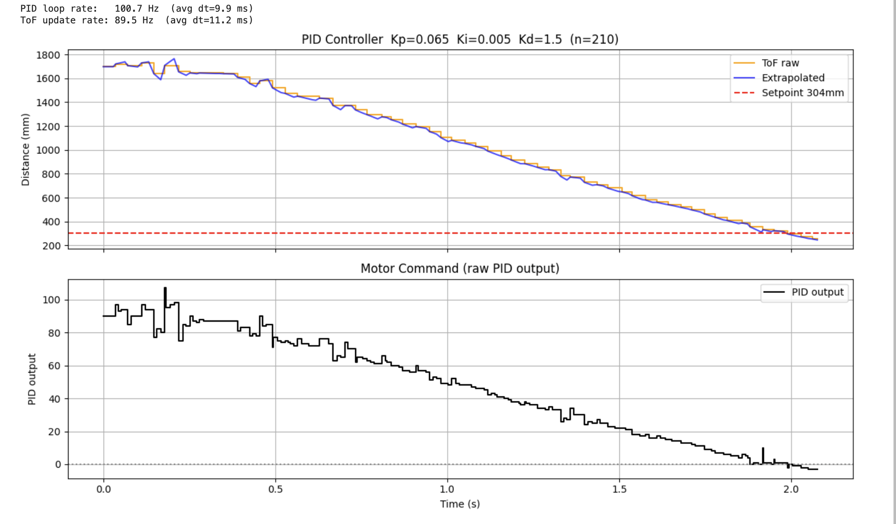
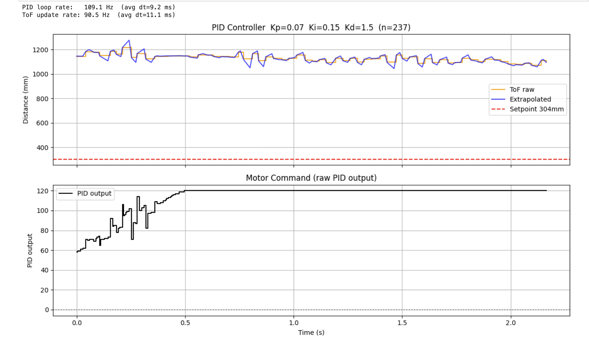
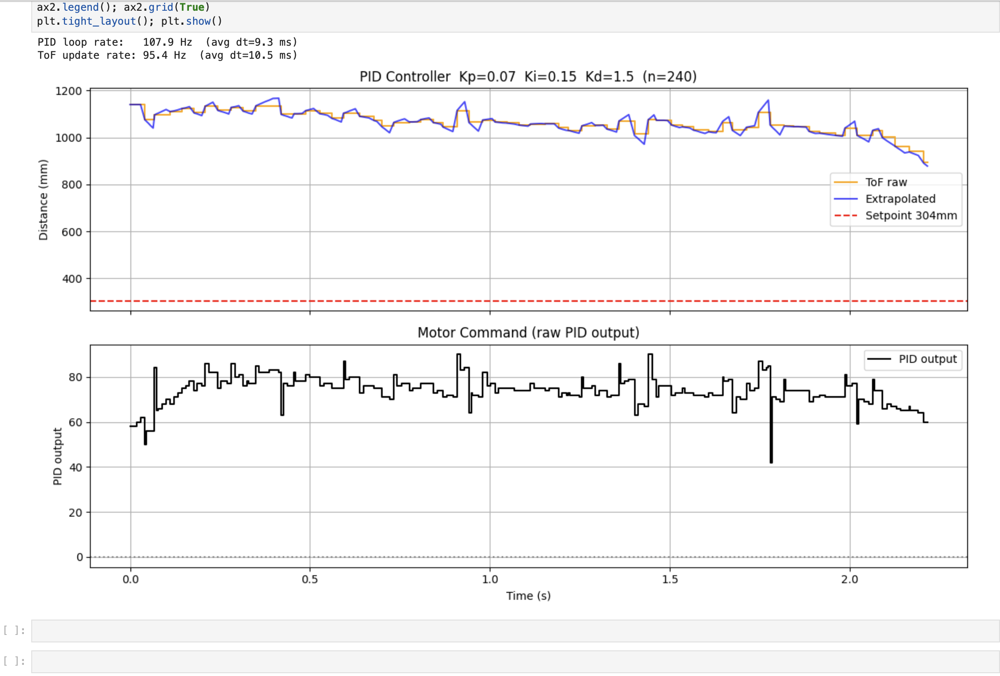

1. Objective
The goal of this lab is to implement a closed-loop linear PID controller that drives the robot to a target distance of 304mm from a wall using the front-facing Time-of-Flight (ToF) sensor as feedback. The implementation progresses from a basic proportional controller through full PID with derivative kick suppression, sensor extrapolation for faster loop rates, and integral wind-up protection.
2. Prelab: BLE & System Architecture
Data transmission over Bluetooth Low Energy (BLE) was optimized to prioritize the control loop's speed. On the Python side, a helper function packs gain values into a formatted string to update the controller on the fly without reflashing:
def set_gains(kp=None, ki=None, kd=None, wu=None):
cmd = "|".join([f"Kp:{kp}", f"Ki:{ki}", f"Kd:{kd}"])
ble.send_command(CommandTypes.SET_GAINS, cmd)
On the Artemis, handle_command() parses this string via a notification callback. In
the final version, all parameters — including wind-up protection — can be toggled on the fly.
To prevent radio polling from bottlenecking the system during an active run, full
BLE.poll() is disabled. Instead, a lightweight timer checks for disconnects at
4Hz, freeing CPU cycles:
if (is_pid_active) {
if (now - last_ble_check >= 250) { // 4Hz safety check
last_ble_check = now;
BLEDevice central = BLE.central();
if (!central || !central.connected()) stop_motors();
}
} else {
BLE.poll();
}3. Control Implementation & Extrapolation
P Controller — Kp Tuning
Three values were tested for the P-only controller: Kp = 0.065, Kp = 0.08, and Kp = 0.11. Kp = 0.11 produced a faster initial approach but resulted in more aggressive overshoot and oscillation before settling. Kp = 0.065 gave a cleaner single-overshoot response and was carried forward as the baseline. Kp = 0.08 was also promising, but once Ki and Kd were added into the mix, Kp = 0.065 proved smoother. These are prior to extrapolation.

Figure 1: P Controller — Kp=0.065 (n=239). Slow approach, overshoots slightly.

Figure 2: P Controller — Kp=0.08 (n=175). Faster convergence, clean single overshoot.

Figure 3: P Controller — Kp=0.11 (n=266). Faster approach but more aggressive oscillation.
Video 1: P Controller (Kp=0.065) — full approach run
Video 2: P Controller (Kp=0.065) — close-range approach
Software Braking Zone
A software braking zone was implemented to progressively limit forward PWM near the setpoint, while leaving reverse output uncapped for fast overshoot correction:
// Graduated braking zones — forward PWM limited near wall, reverse always uncapped
if (dist_extrap < 1500) p_out = min(p_out, 120.0f);
if (dist_extrap < 900) p_out = min(p_out, 80.0f);
if (dist_extrap < 500) p_out = min(p_out, 60.0f);
p_out = constrain(p_out, -255.0, 255.0);Sensor Extrapolation & Speed
The VL53L1X ToF sensor was configured in Long mode with a 33ms timing budget, yielding approximately 30Hz updates reliable up to 4m. To decouple the PID loop from this slow sensor rate, a linear extrapolator was implemented. The slope between the last two valid readings estimates current velocity, and position is predicted forward in time, capped at 50ms — beyond which the linear velocity assumption breaks down.
This allowed the PID loop to run at approximately ~109Hz while the ToF sensor updated at ~30Hz (both settling around 80–100Hz once all parameters were active). The maximum linear speed achieved during approach was approximately 1.1 m/s, estimated from the steepest slope of the ToF distance vs. time curve (Δdist = 1100mm, Δt = 1.0s). The controller was validated across starting distances from 2m to 4m, settling at 304mm in all cases.

Figure 4: P Controller with Extrapolation (Kp=0.08) — orange = ToF raw, blue = extrapolated estimate.
PD Controller — Adding Kd
Adding Kd = 1.5 significantly reduced overshoot. The derivative term opposes rapid changes in error — as the robot approaches quickly, the large negative error rate produces a braking contribution independent of the braking zones. Derivative kick was not a concern since the setpoint remains static throughout the run.

Figure 5: PD Controller — Kp=0.08, Kd=1.5 (n=205). Extrapolated PID loop running at ~100Hz.
Video 3: PD Controller (Kp=0.08, Kd=1.5)
PID Controller — Adding Ki, Final Tuning
A small integral term was added to eliminate steady-state error caused by the motor deadband. With pure P or PD, the robot stops slightly short of 304mm because the output falls below the deadband threshold before reaching the setpoint. Two combinations were tested: Ki=0.005 with Kp=0.08, and Ki=0.005 with Kp=0.065.
As shown in the first test below, the higher proportional gain (Kp=0.08) carried too much momentum into the braking zone, causing the robot to significantly overshoot the 304mm setpoint (dipping down to ~150mm) before the controller had to aggressively reverse to correct it. To fix this, the combination of Kp=0.065, Ki=0.005, Kd=1.5 was chosen for the final system. The slightly lower proportional gain reduced the approach speed just enough to eliminate the large overshoot, giving the integrator room to close the remaining gap cleanly without oscillation.

Figure 6: PID — Kp=0.08, Ki=0.005, Kd=1.5 (n=213). Excess overshoot; robot dips to ~150mm.

Figure 7: PID — Kp=0.065, Ki=0.005, Kd=1.5 (n=210). Clean approach, minimal overshoot. Final configuration.
Video 4: Final PID Controller (Kp=0.065, Ki=0.005, Kd=1.5)
Robustness to Perturbations
The system handles external perturbations effectively. Pushing the robot toward or away from the wall after settling induces a sudden error spike. The PID controller immediately compensates — reversing or accelerating — to re-stabilize at 304mm.
Video 5: Perturbation rejection — robot re-stabilises at 304mm after being pushed
4. Integral Wind-Up Protection (5000-Level)
Wind-up protection makes the controller reasonably independent of floor surface. On a high-friction surface like carpet, wheel stall means the robot never reaches the setpoint. Without protection, the integral accumulates endlessly; when friction is finally overcome, the saturated integrator causes a violent uncontrolled lunge into the wall regardless of actual distance.
To demonstrate this, Ki was temporarily raised to 0.15 to accelerate integral buildup, and the robot was held stationary for 3 seconds before release.
integral += error * (dt_ms / 1000.0f);
// Clamp integral — prevents unbounded accumulation during stall or hold
if (windup_on) {
integral = constrain(integral, -150.0, 150.0);
}The limit of ±150 provides enough sustained output to push through friction without saturating.

Figure 8: Wind-Up OFF (WU:0) — Kp=0.07, Ki=0.15, Kd=1.5. Integral saturates and PID output hits max on release.

Figure 9: Wind-Up ON (WU:1) — Kp=0.07, Ki=0.15, Kd=1.5. Integral plateaus at ±150; robot settles cleanly.
Video 6: Wind-Up OFF — unsaturated integral causes the robot to crash into the wall on release
// Math Behind the Plots — Robot held stationary at ~1100mm from wall
// Base P-Term: error = 1100 - 304 = 796mm
P_term = 0.07 * 796 = 56
// Wind-Up ON (WU:1): integral clamped at ±150
I_term = 0.15 * 150 = 22.5
Total = 56 + 22.5 = 78.5 ← matches ~80 plateau in the plot
// Wind-Up OFF (WU:0): integral grows unbounded, hits safety governor
Total = capped at 120 ← caught by min(p_out, 120) in firmware